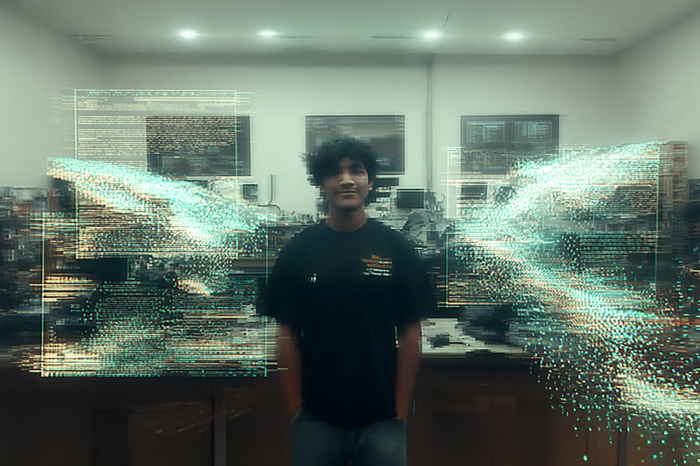

¿Ser seleccionado por una IA?
No, que te seleccionen por como usas la IA
No, que te seleccionen por como usas la IA

En este nuevo mundo distópico en el que nos hemos sumergido hace relativamente poco, no sabemos lo que es real o lo que no.
Pero lo que sí sabemos es que desde que apareció la IA en nuestras vidas todo ha cambiado. Por eso, como ya les hemos contado en un post anterior (puedes verlo acá), la IA se ha incorporado a los procesos de selección. Hoy les contamos como lo vivió Germán, una de las primeras personas que ingresaron a Compara bajo este nuevo método.
Veamos primero el proceso de selección, y aquí hagan memoria todas esas personas que han pasado por uno recientemente para comparar (pues si, acá todo se compara)
Germán: Bastante fuera de lo convencional. Las entrevistas de trabajo usualmente se sienten como un interrogatorio: el entrevistador pregunta A, el entrevistado responde B y así sucesivamente hasta completar un checklist de preguntas. En este caso, partiendo desde la primera entrevista con RRHH, se sintió como una conversación mucho más humana, donde más allá de querer saber sobre mis estudios o si tengo X años de experiencia con un lenguaje de programación, lo importante era conocer cómo era yo como persona. Luego, al llegar a la prueba técnica, esta no fue nada parecida a lo que me había enfrentado en procesos anteriores. Uno suele estar preparado para la típica prueba de desarrollo de software: construye una web, API o aplicativo móvil -dependiendo del área en la que te enfoques- usando un conjunto de tecnologías y cumpliendo con un listado de requerimientos. En este caso, se planteaba un problema real que se tuvo en Compara, con detalles sobre cómo fue resuelto, y se esperaba que uno llegase a un resultado similar. El cómo no estaba definido, uno podía abordar el problema usando cualquier tecnología que quisiese. Lo único que no podía faltar en la solución de uno era el uso de Inteligencia Artificial.

Germán: A pesar de tener la ansiedad de saber que de mi resultado en la prueba dependía obtener el trabajo que quería, el desafío técnico era tan interesante que incluso la pasé bien resolviéndolo. Ver como pasaba de no tener la más mínima idea de cómo abordar el problema, a tener los primeros avances y finalmente llegar a un resultado del cual podía estar orgulloso, creo que es algo que no suele pasar normalmente en los procesos de selección.
Germán: En un proceso de selección que tuve anteriormente, para el desarrollo de la prueba técnica, se pedía el uso de ChatGPT para resolver una parte de la prueba. Sin embargo, el uso de IA que se esperaba de uno estaba muy por debajo del requerido para resolver la prueba técnica de Compara.
Germán: El uso de Inteligencia Artificial es parte fundamental de la prueba técnica. Si bien hay ciertas maneras de resolver la prueba de manera tradicional -sin IA- en la práctica es imperativo su utilización para poder llegar a un resultado aprobatorio. De hecho, el objetivo de la prueba es justamente eso: ver cómo uno hace uso de las distintas herramientas de IA para resolver problemas.
Ahora vamos a enfocarnos en Germán y la IA, algo así de como se conocieron y si fue un match a la primera.
Germán: Creo que acá es importante acotar lo que puede entenderse como conocimiento de Inteligencia Artificial. Por un lado, está el conocimiento “teórico” de IA, como por ejemplo conceptos de deep learning, machine learning, entre otros. Del otro lado, está el conocimiento “práctico”: conocer sobre los distintos modelos de LLM que existen actualmente y saber cuál usar en distintos escenarios, por ejemplo. Lo teórico, si bien puede llegar a ser útil en ciertos casos, no es un prerrequisito para poder sacarle provecho a lo práctico. Claro que existen excepciones, en las que se necesita un Data Scientist que pueda entrenar un modelo desde 0, pero en la mayoría de casos no es necesario tener una maestría en Inteligencia Artificial para poder hacer uso de ella. En mi caso, lo que he podido aprender sobre IA va de la mano con la curiosidad general que tengo sobre la tecnología. Siempre he querido aprender sobre cómo funcionan las computadoras, celulares, etc., así que naturalmente me sumergí de lleno en el ahora boom de la IA.
Es muy fácil sentirse abrumado y pensar que uno se está quedando atrás. La rapidez con la que evoluciona esta tecnología no se parece en nada a los cambios que tuvimos en el pasado, con el surgimiento de la web o los celulares, por ejemplo. Sin embargo, creo que es importante no caer en el FOMO ni creer que el día de mañana nuestros trabajos serán reemplazados por una IA. Al contrario, pienso que ver a la IA como un superasistente personal podría ayudar a eliminar las partes aburridas de nuestro trabajo.
¿Cuántas horas se gastan al día creando reportes de Excel o completando manualmente formularios? Este son el tipo de tareas cotidianas que podrían beneficiarse enormemente al adoptar a la IA como una herramienta de trabajo más, igual que se hizo en el pasado con las calculadoras y computadoras.
Germán: En mi trabajo anterior se estaba dando los primeros pasos en la instauración del uso de Inteligencia Artificial. Sin embargo, al ser el clásico ambiente corporativo, con muchos procesos burocráticos, es un proceso que se iba a llevando paso a paso.
Germán: Una de mis funciones es la revisión de la prueba técnica de los candidatos que buscan entrar al área de tecnología de la empresa. Así, he tenido la oportunidad de ver cómo distintas personas abordan esta prueba. Las personas que finalmente la pasan, son aquellas que tienen incorporado el uso de la IA como una herramienta más en su día a día. Son aquellas que van más allá de solo conversar con ChatGPT, que prueban y comparan modelos de LLM de distintos proveedores, como Gemini, OpenAI o Deepseek, y que llegan a soluciones muy creativas ante problemas que suelen darse en el uso de estos modelos, como el límite de tokens que pueden procesar.
Cambiando de tema, pero siguiendo con la selección. Nos vamos a enfocar en la cultura de Compara. Algo que Tati en su último post, recalcó como importante a la hora de seleccionar nuevas personas.
Germán: Creo que uno de los principales motivos del éxito de Compara es las personas con las que cuenta. No solo porque se tiene gente supertalentosa en lo que hace, a la que ves trabajar y te quedas sorprendido por su creatividad y conocimientos para resolver problemas, sino que además se tienen a personas muy amables, siempre dispuestas a resolver cualquier duda que tengas. Compara es además una empresa donde se respira tecnología, especialmente la Inteligencia Artificial. Siempre se está conversando sobre los últimos avances de la IA y cómo estos podrían incorporarse en los distintos procesos de la empresa para brindar una mejor experiencia a sus usuarios. No solo en los servicios con los que los usuarios interactúan directamente, como atención al cliente, sino también en toda la magia que sucede por detrás para ayudar a las personas a obtener el mejor seguro para ellos.
Queremos agradecer a Germán por su tiempo y habernos contado tan detalladamente todo su proceso de selección. Además de dejarnos pensando y reflexionando sobre cuestiones y usos de la IA.
Nos leemos en una próxima nota de El Comparador.
 Actualidad
ActualidadEl recordado programa noventero “Venga Conmigo” marcó a toda una generación en Chile. Su exitoso segmento “Corazones Service” se transformó…
 Actualidad
ActualidadHace aproximadamente 2 meses comenzamos con el cierre de lo que empezó en julio como el “Compariniverse”.
 Actualidad
ActualidadHace unos meses lanzamos Compariniverse: la primera campaña en Chile protagonizada por una celebridad completamente clonada con IA.